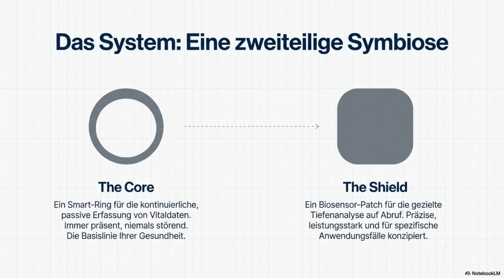
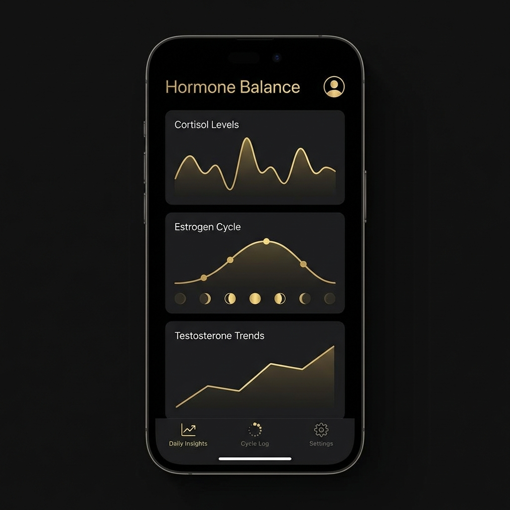

Dein vitalstes
Jahr beginnt jetzt.
NANIL Pulse Phase 1 – Der intelligente Ring, der nicht nur misst, sondern aktiv hilft. Revolutionäre neuromodulative Technologie trifft auf präzises Vitaltracking. Fühle den Unterschied zwischen reinem Monitoring und echter Unterstützung.
📜 Patent angemeldet • Entwickelt in Deutschland
Phase 1 von 5 — Der Ring ist erst der Anfang.
Ring. Patch. App. Stimmanalyse. Kontextuelles Wellbeing. Ein Ökosystem, das mit dir wächst.


Was ist NANIL Pulse?
Kurz und verständlich: Produkt, Technik und für wen es gedacht ist.
NANIL Pulse ist ein intelligenter Vital-Ring, der deine Körperdaten rund um die Uhr misst (Herzfrequenz, HRV, Schlaf, Stress, Hormon-Balance) und dich nicht nur informiert, sondern aktiv unterstützt: Durch sanfte Impulse wird der Vagusnerv stimuliert – für mehr Ruhe und Regeneration im Alltag. Zusätzlich bietet NANIL einzigartige Features wie Telefonieren über den Ring (Bone Conduction) und die KI-Assistentin Nanil für Sprache und Nachrichten.
Die Herzfrequenzvariabilität (HRV) zeigt, wie gut dein Körper mit Belastung umgeht. Eine höhere HRV bedeutet mehr Resilienz und bessere Erholung – NANIL misst und verbessert sie durch aktive Regulation.
Der Vagusnerv verbindet Gehirn und Körper und steuert Entspannung. Transkutane Vagusnerv-Stimulation (tVNS) über den Ring unterstützt dich dabei, schneller in einen ruhigen, erholsamen Zustand zu kommen – ohne dass du etwas tun musst.
Ideal für Gestresste, Sportler, Schichtarbeiter und alle, die aktive Entspannung statt nur Daten wollen.
Skizze

Vagusnerv

Ring-Platzierung

Erklärung


System-Architektur
Wissenschaftlicher Hintergrund:Aktuelle Forschung zeigt, dass sich Veränderungen im menschlichen Zustand in feinen Mustern der Stimme widerspiegeln. Studien aus der Stoffwechsel- und Mental-Health-Forschung belegen, dass KI-Modelle solche Abweichungen erkennen und als Hinweis auf Belastungen oder Dysregulationen nutzen können. Nanil greift diese Erkenntnisse auf, um Stimme als System-Signal zu verstehen – nicht zur Diagnose, sondern zur frühen Orientierung und situativen Unterstützung.
Stimm-Analyse Demo
Erleben Sie, wie NANIL Pulse Ihre Stimme interpretiert. Wählen Sie ein Szenario:
Wie funktioniert NANIL Pulse?
Die Wissenschaft hinter der Magie: Von der Messung zur Modulation.
1. Vision
Von der Vision zum Projekt: NANIL Pulse entstand aus der Idee, Stress in Echtzeit zu erkennen und aktiv zu lindern – bevor er zum Problem wird.
2. KI-Analyse
Unser patentierter 'Neuro-Core' erkennt Stressmuster bevor Sie sie spüren, mit höchster Präzision.
3. Aktive Modulation
Über haptisches Feedback und sanfte Impulse stimuliert NANIL Pulse den Vagusnerv vollautomatisch.

System Symbiose
Ein ganzheitlicher Ansatz für Körper und Geist
Biologische Resonanz
Unser Körper ist ein elektrisches System. Stress, Angst und Umweltbelastungen bringen unsere natürlichen Frequenzen aus dem Takt. NANIL Pulse erkennt diese Dissonanzen in Echtzeit.
Aktive Modulation
Statt nur zu messen, agiert das System. Über mikroskopisch feine Impulse sendet der Chip eine harmonisierende Gegenfrequenz, die den Vagusnerv stimuliert und den Körper binnen Sekunden in einen Zustand der Kohärenz zurückführt.
Vaskuläre
Kontext-Interpretation
NANIL Pulse misst keinen Blutdruck. Stattdessen erfasst der Pulse Patch über PPG-Sensorik die Pulswellen-Geschwindigkeit und erkennt vaskuläre Muster. Die App interpretiert diese im Kontext mit Stimmanalyse, HRV und Stressdaten.

Pulse Ring + Patch — Vaskuläre PPG-Sensorik
Hormone beeinflussen deine Gefäße

Vaskuläre Muster sind kein isoliertes Signal — sie spiegeln deinen hormonellen Zustand wider. Die App zeigt Cortisol, Östrogen-Zyklen und Testosteron-Trends auf einen Blick. NANIL erkennt diese Zusammenhänge und interpretiert sie im Kontext mit deinen Gefäßdaten.
- 🔴 Eisprung — Östrogen-Peak weitet Gefäße, PWV sinkt
- 🟡 Lutealphase — Progesteron erhöht vaskulären Tonus
- 🟢 Zyklusmuster — NANIL erkennt Phasen an vaskulären Trends
- 💪 Testosteron hoch — erhöhter arterieller Tonus, steifere Gefäße
- 😤 Cortisol-Stress — vaskuläre Anspannung + Stimmanalyse = klares Bild
- 🧘 Recovery — Testosteron-Cortisol-Ratio erkennbar am Gefäß-Muster
Vaskuläre Muster + Hormon-Tracking + Stimmanalyse = dein vollständiges Kontext-Bild.
Patch-Sensorik
Der Pulse Patch erfasst per Photoplethysmographie (PPG) die Pulswellen-Geschwindigkeit. Daraus leitet die KI Trends und Muster im arteriellen Tonus ab — kontinuierlich und nicht-invasiv.
Kontext statt Zahl
Statt "120/80" bekommst du Kontext: Vaskuläre Muster + Stimmanalyse + HRV + Hormon-Tracking = ein ganzheitliches Bild deines arteriellen Wohlbefindens. Zusammenhänge statt isolierte Werte.
Wellness, nicht Medizin
Keine mmHg-Werte = kein Medizinprodukt-Risiko. NANIL interpretiert vaskuläre Muster als Wellness-Signal — regulatorisch sicher und trotzdem hochinformativ für dein tägliches Wohlbefinden.
Blutdruck messen. Vaskuläre Muster interpretieren.
Misst nicht mehr. Interpretiert anders.
Unsere Kollektion
Drei Wege zu mehr innerer Ruhe – wählen Sie Ihren Begleiter.
Nano-Technologie
Präzision auf kleinstem Raum
Mehr als ein Health-Tracker
NANIL ist dein intelligenter Begleiter für Gesundheit UND Kommunikation

Bone Conduction Telefonie
Revolutionäre Knochenschall-Technologie überträgt Anrufe direkt über deine Fingerknochen. Kristallklarer Sound ohne Kopfhörer. Niemand sonst kann das!

Nachrichten abhören
Nanil liest dir eingehende Nachrichten vor (WhatsApp, SMS, E-Mail). Bleib informiert, ohne auf den Bildschirm zu schauen.

Hormone Balance
Verstehe deine hormonellen Muster im Kontext. NANIL erkennt Zusammenhänge zwischen Stress, Schlaf und hormoneller Balance – für bewusste Entscheidungen.
✨ Die Zukunft am Finger: Gesundheit + Kommunikation in einem Gerät
Wie NANIL funktioniert
Von der Messung zur aktiven Unterstützung
Kontinuierliche Messung
HRV, Herzfrequenz, SpO₂, Körpertemperatur, Atemfrequenz, Schlafphasen und Hormonhaushalt – rund um die Uhr
KI-Analyse
Deine Daten werden lokal auf dem Gerät (Edge AI) analysiert und mit personalisierten Insights versehen
Aktive Regulation
Sanfte Vibrationen leiten dich in Echtzeit zu Entspannung und Balance – ohne dass du etwas tun musst
Nanil – Voice-KI
Fragen Sie Nanil per Sprache.
Nanil erklärt Ihnen alles über NANIL Pulse. Klicken Sie auf das Nanil-Widget unten rechts, um ein Gespräch zu starten.
NANIL vs. Konkurrenz (Phase 1)
| Feature | NANIL Pulse | Premium Smart Rings | Budget-Ringe |
|---|---|---|---|
| Preis | €99 | €349+ | €75 |
| Monatliches Abo | NEIN ✓ | €5.99/Monat | Teilweise |
| HRV + StressTracking | ✓ | ✓ | Begrenzt |
| Aktive Regulation (Vibrationen) | ✓ EINZIGARTIG | ✗ | ✗ |
| BioPatch Closed-Loop | ✓ EXKLUSIV | ✗ | ✗ |
| Bone Conduction Telefonie | ✓ WELTWEIT EINZIGARTIG | ✗ | ✗ |
| Vagusnerv-Stimulation (tVNS) | ✓ WELTWEIT EINZIGARTIG | ✗ | ✗ |
| Akkulaufzeit | 5-7 Tage | 5-7 Tage | 3-5 Tage |
| Wasserdicht | IP68 | 100m | IP67 |
Häufig gestellte Fragen
Wir beantworten Ihre wichtigsten Fragen
Wie unterscheidet sich NANIL von Oura Ring?
NANIL bietet nicht nur passives Tracking wie Oura, sondern aktive Regulation durch intelligente Vibrationen und das BioPatch Closed-Loop-System. Zudem: Kein monatliches Abo (Oura: €5.99/Monat).
Ist NANIL ein Medizinprodukt?
Nein. NANIL Pulse ist ein Wellness- und Lifestyle-Produkt zur Unterstützung von Entspannung und Stressmanagement. Es ersetzt keine professionelle Gesundheitsberatung.
Wann wird NANIL verfügbar sein?
Der offizielle Launch ist für Juli 2026 geplant. Early Access Mitglieder erhalten bevorzugten Zugang und exklusive Updates.
Gibt es ein Rückgaberecht?
Ja! 30 Tage Geld-zurück-Garantie ab Lieferung, ohne wenn und aber.
Wie funktioniert die App?
Die NANIL App (iOS & Android) zeigt Ihre Gesundheitsdaten in Echtzeit, gibt personalisierte Empfehlungen und benötigt kein Abo. Alle Premium-Features sind inkludiert.
Die Gründerin
Hinter NANIL Pulse steht eine Person mit Vision und Expertise.
Nazan Nil Dalkic (Nazannil)
35+ Jahre Erfahrung in Wellness und Stress-Management. NLP Master, Reiki-Meisterin. Mehrsprachig: Deutsch, Türkisch, Englisch. Ihre Mission: Technologie mit therapeutischer Kompetenz verbinden – so ist NANIL Pulse entstanden.
Gründerin & VisionKontakt aufnehmen
Wir freuen uns auf Ihre Anfrage
30 Tage Geld-zurück · Sichere Zahlung · Entwickelt in Deutschland